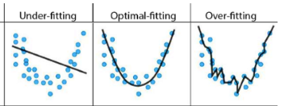

‘회귀’란 무엇인가요?
회귀란 무엇인가요?
회귀(Regression)는 어떤 변수(독립 변수/independent variable)가 다른 변수(종속 변수/dependent variable)에 어떤 영향을 미치는지 알아보는 방법입니다. 다시 말해 한 변수의 값이 바뀌면 다른 변수의 값이 어떻게 변하는지 알 수 있도록 관계를 찾아내는 것입니다. 이 방법을 잘 사용하면 앞으로의 결과를 쉽게 예측할 수 있습니다.
 |
|---|
| 회귀 |
회귀는 우리가 가진 데이터를 이어주는 선(직선이나 곡선)을 찾아주는 효과적인 수단입니다. 회귀를 사용하면 수학적인 모델 을 만들어 독립 변수와 종속 변수의 관계를 보여줄 수 있습니다. 수학적인 모델은 우리가 어떤 시스템(예를 들어 날씨, 판매량 등)을 이해하고, 그것을 바탕으로 미래를 예측하는 데 도움을 줍니다. 하지만, 우리가 만든 수학적 모델이 항상 데이터를 잘 데이터의 속성을 잘 반영하지 않을 수도 있습니다. 그러므로 데이터의 패턴을 더 잘 나타낼 수 있는 모델을 찾는 과정이 필수적입니다.
예제 1: 비가 언제 올 지 어떻게 알 수 있을까요?
날씨 앱을 열거나 뉴스를 보면서 “오늘 비 올 가능성이 몇 퍼센트인가요?“라고 물어본 적 있나요? 기상학자들은 수학적인 모델을 사용해서 비가 올 가능성을 계산합니다. 그럼 이 수학적 모델에는 어떤 변수(variables)가 필요할까요? 단순히 “비 냄새"만으로 충분할까요?
연습 문제 1:
누군가 도형의 넓이(area)를 보고 그 도형의 종류를 맞추고 싶어 한다고 가정해보겠습니다.
- 그것은 가능한가요? 넓이를 보고 도형의 종류를 알 수 있을까요?
- 넓이로는 그것이 어떤 도형인지 알 수 없습니다.
그렇다면, 도형의 종류를 알기 위해서는 어떤 것들을 알아야 하나요?
이전 예제에서의 모델(model)은 종속 변수(dependent Variable)와 독립 변수(independent Variables) 간의 관계를 설정하기 위해 만들어진 함수일 뿐입니다. 예를 들어 직선(y = ax + b), 포물선(y = a(x - h)^2), 3차 곡선(y = ax^3 + bx^2 + cx + d)과 같은 함수들이 모델로 사용됩니다. 이 외에도 다양한 함수가 모델로 활용될 수 있습니다.
우리가 만든 모델이 데이터를 잘 설명하는 지 어떻게 확인할 수 있을까요?
이미 만들어진 머신 러닝 모델을 사용할 때는, 데이터를 잘 대변할 수 있는 모델을 골라야 합니다. 아래 [그림1]을 보면 데이터 포인트들이 포물선 형태를 나타내고 있습니다. 따라서 우리가 사용해야 할 모델은 포물선 모델(parabolic model)일 가능성이 큽니다. 포물선 모델은 다음과 같은 식으로 표현됩니다:
\[ y = a(x -h)^2 \]
포물선 모델을 사용할 때는, 포물선의 꼭지점(vertex)이 어디에 위치할 지를 알아야 새로운 데이터 포인트를 예측할 수 있습니다. 만약 꼭지점을 설정하지 않고 모델을 사용하면 데이터와 잘 맞지 않는 “과소적합(Under-fitting)” 상태가 될 수 있습니다. 반대로, 꼭지점을 너무 많이 설정하면 데이터에 지나치게 맞추려는 “과적합(Over-fitting)” 상태가 될 수 있습니다. 우리가 원하는 것은 과소적합이나 과적합 상태가 되지 않은 모델을 만들어서, 기존 데이터뿐만 아니라 새로운 데이터도 잘 예측할 수 있게 하는 것입니다.
|  |
|---|
| [그림1]: 과소적합(Under-Fitting)과 과적합(Over-Fitting) |
모델을 선택할 때는 반드시 그 모델이 여러분의 데이터를 잘 설명할 수 있는지 확인해야 합니다. 그렇지 않으면 다음 두 가지 문제 중 하나가 발생할 수 있습니다:
-
과소적합(Under-Fitting)
과소적합은 주어진 데이터에서 관계를 찾지 못할 때 발생합니다. 주로 사용할 데이터가 부족할 때 이런 문제가 나타납니다.
-
과적합(Over-Fitting)
과적합은 데이터의 모든 값을 지나치게 반영하려 할 때 발생합니다. 이 과정에서 실제로는 의미가 없는 값들, 예를 들어 이상치(outliers) 같은 값들까지 모델에 포함하게 됩니다. 이렇게 하면 현실을 제대로 반영하지 못합니다.
예를 들어, 변이 1개나 2개인 도형은 논리적으로 말이 안 되는 경우처럼, 실제로 존재하지 않는 값을 반영할 수도 있습니다.